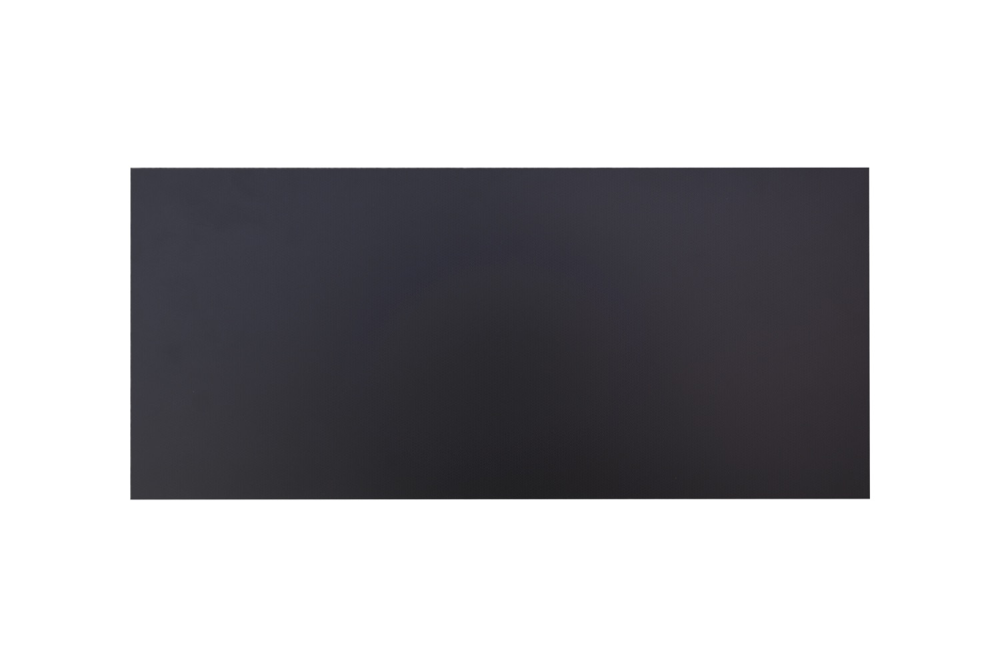
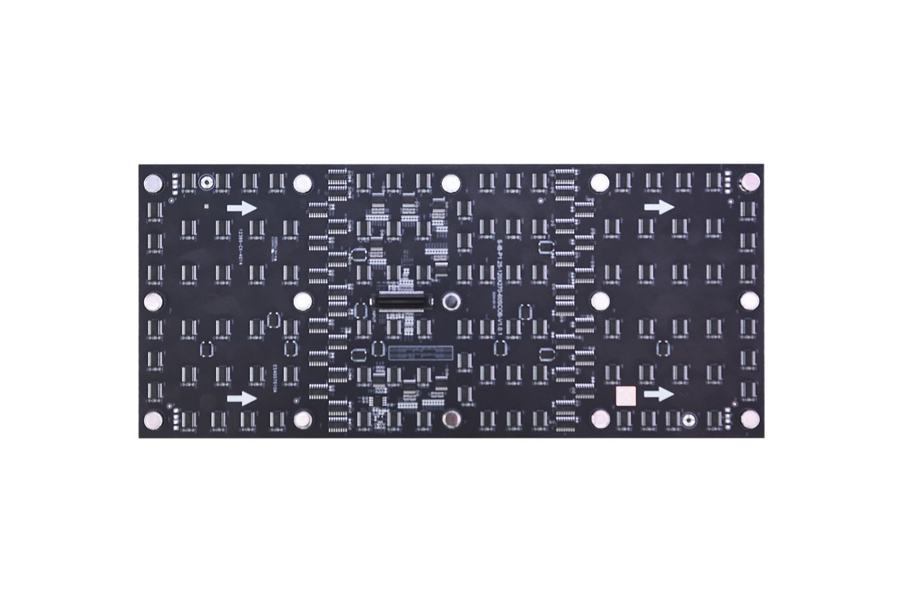

By David
CoB (chip-on-board) is the packaging change that is quietly rewriting dvLED specifications: instead of an individual packaged LED soldered to the board, the bare LED chip is bonded directly to the PCB and covered with a protective layer. For integrators, the practical consequences are fewer exposed parts, a wider viewing angle and a surface that resists knocks and moisture far better than a conventional SMD module.
This matters more in the dvLED conversation than in generic LED marketing, because AV integrators specify for spaces where the audience stands close to the wall and where a service call is expensive. This guide covers what changes at the module level and what that means for a project specification.
In an SMD (surface-mount device) module, each pixel is a small packaged LED — a lamp with its own housing, bonded to the board and standing proud of the surface. The lamp is a component that can be struck, and the gap around it collects dust.
In a CoB module, the dies are bonded directly to the substrate and coated. There is no lamp housing to catch on anything, no solder joint standing proud of the board, and the emitting surface is effectively flat.
The result is a module that behaves more like a solid panel than an assembly of tiny components.
| Property | CoB module | SMD module |
|---|---|---|
| Packaging | Bare die bonded to board, coated | Packaged lamp per pixel, soldered |
| Surface | Flat, sealed | Raised lamps with gaps between |
| Viewing angle | Wide (close to 180°) | Narrower |
| Impact resistance | High — no exposed lamp | Lower — lamps can be struck |
| Moisture and dust | Protected by the coating layer | Depends on the lamp housing |
| Contrast | High, from the flat black surface | Lower, from reflections between lamps |
A dvLED wall is usually viewed from the side as well as head-on. In a lobby, a control room or an auditorium, the seats at the edge of the room see the wall at a steep angle, and on an SMD module those viewers see a dimmer, colour-shifted image.
A CoB module holds brightness and colour further round the angle, so the wall reads consistently across a wide seating arc.
The flat surface also helps with the second problem in a bright room: reflection. A module covered in raised lamps reflects light between them, which lifts the black level. A flat, matte CoB surface has less to reflect.

Because the emitting surface is sealed, a CoB module is less likely to need cleaning than an SMD one, and less likely to lose a pixel to a knocked lamp or a corroded joint.
When a module does need attention, it is replaced the same way on either technology. Our indoor and rental cabinets are front-serviceable on the ranges where that matters, so a module comes out from the face of the screen without dismantling the wall.
For an integrator, the relevant question is not only failure rate but the cost of the visit. A technology that fails less often across a ten-year installation is worth more than a marginally lower module price.
We manufacture CoB in several series, covering indoor fine pitch through outdoor and rental. The figures below come from our published specifications.
Brightness and pitch differ by series because the applications differ: an indoor fine-pitch wall beside a reception desk needs high contrast at 800 cd/m², while an outdoor wall in direct sun needs 3000 cd/m² or more.
| Series | Pitch | Brightness | Refresh | Contrast |
|---|---|---|---|---|
| RH-PRO COB | P0.78 / P0.93 / P1.25 | 800–1200 cd/m² | ≥7680Hz | ≥25000:1 |
| CV-PRO | Fine pitch | 800 cd/m² | ≥3840Hz | — |
| Z Series (rental) | P1.95 / P2.6 | 1200 cd/m² | ≥7680Hz | — |
| ZH Series (touring) | P1.95 / P2.6 | 3400–4000 cd/m² | ≥7680Hz | ≥10000:1 |
| EF (outdoor) | P1.5625 / P1.953 | 3000 cd/m² | ≥3840Hz | ≥10000:1 |
| EH-PRO (outdoor IP65) | P1.5625 / P1.953 | 3500 cd/m² | ≥3840Hz | ≥10000:1 |
CoB is a manufacturing process before it is a product feature, so the capacity behind it matters when a project has a fixed date. Our Shenzhen facility runs 8 IC production lines and 7 LED SMT production lines under an ISO 9001:2015 quality management system, with automated optical inspection, an anti-static controlled environment and a 72-hour burn-in before packing.
That inspection sequence is the part integrators should ask about, because a CoB module is bonded rather than assembled from discrete lamps — a fault caught at the line is a fault that never reaches site. For a project specification, the relevant questions are the pitch, the brightness and the certification file the factory can issue with the order.
CoB changes the conversation in a bid package in one specific way: it removes the argument about which lamps are inside. With SMD, the lamp brand becomes a line item that can be substituted. With CoB, the die is bonded to the board, so the specification is anchored to the module rather than to a component list.
That makes CoB easier to hold constant through a competitive tender, provided the specification names the technology and the serviced pitch rather than only a price per square metre.
The factory ships on a 15 to 20 working day lead time with a three-year warranty, and holds ISO 9001:2015 with CE, FCC and RoHS certification.
For this requirement our range covers it directly: the COB CV-PRO series the RH-PRO fine-pitch COB the COB Z rental series.
Send your specifications for a detailed LED display price quote with UL/ETL certification.
Request Price Quote Chat on WhatsApp